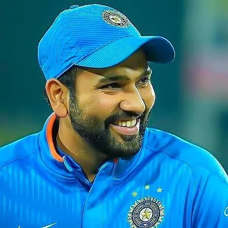

Personal information:
Full name:-Rohit Gurunath Sharma Born:-30 April 1987 (age 36) Nagpur, Maharashtra, India
Nickname:-Hitman, Shana Batting:-Right-handed Role:-Top-order batter
International information:
National side:-India (2007–present) Test debut (cap 280):-6 November 2013 v West Indies
ODI debut (cap 168):-23 June 2007 v Ireland T20I debut (cap 17):-19 September 2007 v England
Medal record:
Men's Cricket:-Representing India
ICC Cricket World Cup
Runner-up:-2023 India
ICC T20 World Cup
Winner:-2007 South Africa
Runner-up:-2014 Bangladesh
ICC Champions Trophy:-
Winner 2013 England and Wales
Runner-up:- 2017 England and Wales
ICC World Test Championship:-
Runner-up 2019–21
Runner-up 2021–23
ACC Asia Cup:-
Winner 2010 Sri Lanka
Winner 2016 Bangladesh
Winner 2018 United Arab Emirates
Winner 2023 Pakistan-Sri Lanka
Runner-up:- 2008 Pakistan
ICC Under-19:- Cricket World Cup
Runner-up 2006 Sri Lanka